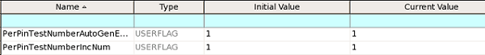
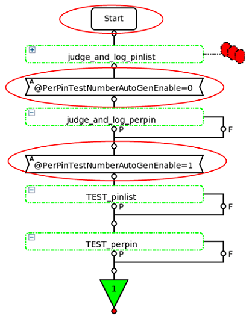

Generating per-pin test numbers
SmarTest can generate test numbers for each pin. This feature must be enabled by setting a testflow flag and set up by setting a test suite flag and specifying the desired values to test suite variables.
About this task
Set up per-pin test numbers when you need separate test numbers for individual pins and do not want to set them up manually.
Procedures
Enabling the per-pin test numbering feature in SmarTest
- On the testflow flag page, turn on the test_number_enable flag.
On the testflow variable page, set the testflow variable PerPinTestNumberAutoGenEnable to 1.
To disable the per-pin test numbering feature, set PerPinTestNumberAutoGenEnable to 0.
- In the test table, define a base test number for the test item for which you are to enable
the per-pin test numbering generation.
SmarTest takes the base test number as a starting number to generating incremental test numbers for all pins.
Setting up the per-pin test numbering for a testflow
- Turn on the test_number_enable flag on the testflow flag page.
- Define the required testflow variables on the testflow variable
page.

- Set the type of PerPinTestNumberAutoGenEnable and
PerPinTestNumberIncNum to
USERFLAG.
PerPinTestNumberIncNum sets the test number step incrementing from the base test number.
- Set PerPinTestNumberAutoGenEnable to 1.
- Set the type of PerPinTestNumberAutoGenEnable and
PerPinTestNumberIncNum to
USERFLAG.
- Define the base test number for the specified test item of the test suite in the test table.
During the test suite execution, if a generated test number conflicts with an existing test number, the system shows an error message in the report window to indicate the conflicting in the following format:
Error: Duplicate testnumber '$number' detected in $testsuite_name.
Examples
Writing the test method
virtual void run()
{
STRING_VECTOR Pin_List;
STRING Test_Name;
int Pin_Num;
int Pin_List_No;
Pin_List = PinUtility.getDigitalPinNamesFromPinList(mPins,TM::IO_PIN,true,true);
Pin_Num = Pin_List.size();
Test_Name = "passCurrLimit_uA";
ARRAY_D values(Pin_Num);
for (int i = 0; i < Pin_Num; i++){
values[i] = (i+100);
}
STRING pinstr = PIN_UTILITY::createPinListFromPinNames(Pin_List);
TEST(pinstr.c_str(), Test_Name.c_str(), V93kLimits::tmLimits,values,TM::CONTINUE);
// If this feature is disabled, only one test number is generated in the execution. Otherwise, 100 test numbers are generated. Creating a testflow by using the above-defined test method.

- At the Start, the testflow reads the value of PerPinTestNumberAutoGenEnable in the testflow variable table, which is 1 to enable the per-pin test numbering feature.
- Set the value of PerPinTestNumberAutoGenEnable to 0 to disable the per-pin test numbering feature for the following test suites.
- Set the value of PerPinTestNumberAutoGenEnable to 1 to enable the per-pin
test numbering for the following test suites.
Since PerPinTestNumberAutoGenEnable is a global testflow variable, changing it in the source code may lead to an unsafe thread issue. We do not recommend to change it in the source code.
Functional changes
- Introduced in SmarTest 7.3.3